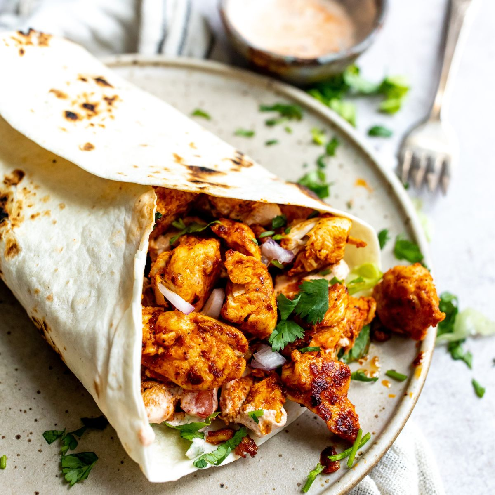

- 2 Kycklingfiléer
- Valfri kryddning
- Valfria grönsaker
- Valfri sås
- 2 Tortilla bröd
Du behöver:
Kycklingwrap
(2 portioner)
1. Skär kycklingen i mindre bitar
2. Stek kycklingen och krydda efter egen smak tills dem är klara
3. Värm tortillabröden och fyll med kyckling, grönsaker, & sås
Källa: Studentköket - Quick (s.29)